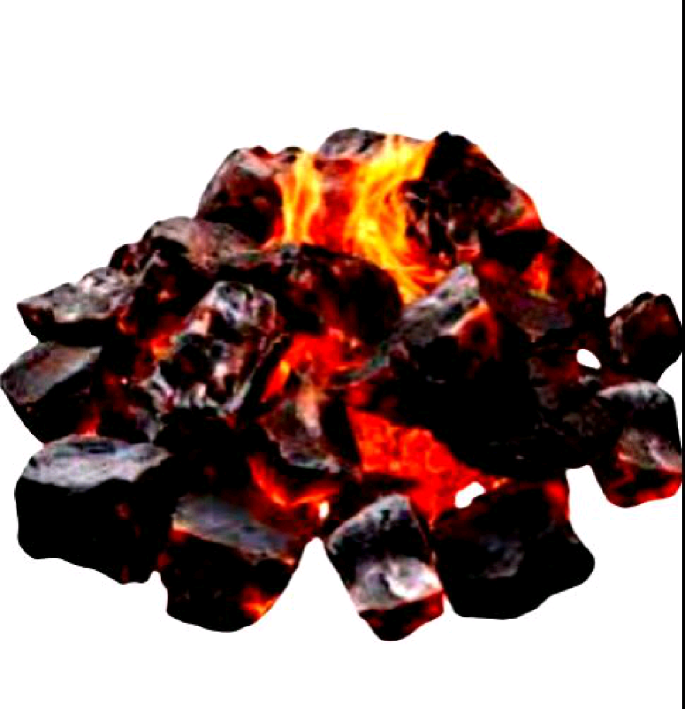
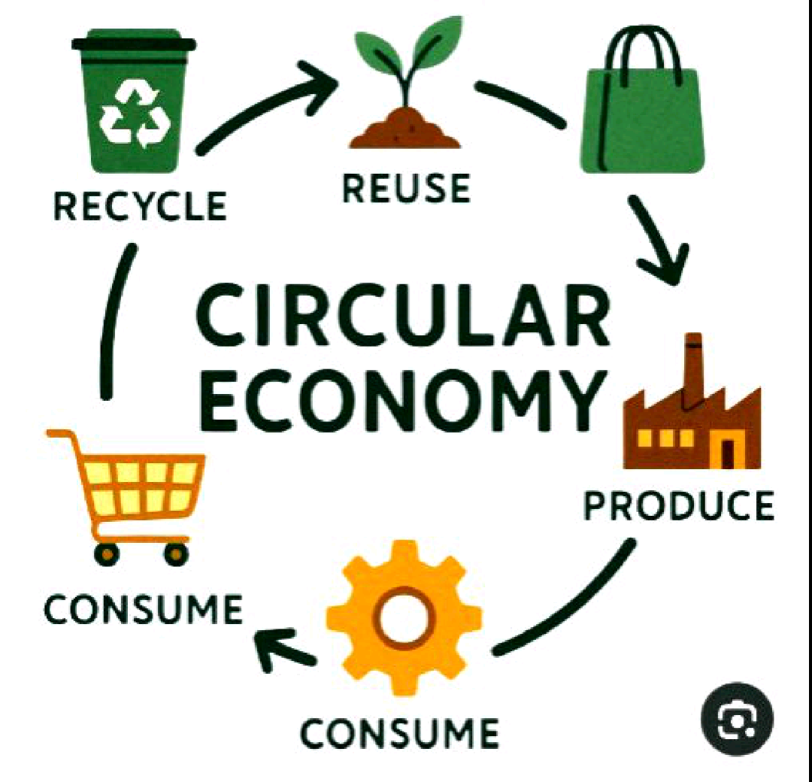
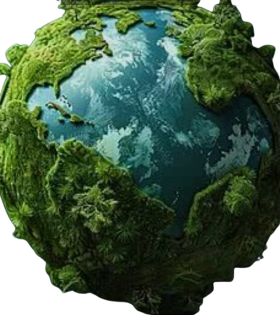

BIOBRIX transforme les déchets agricoles, notamment les noyaux de dattes et les résidus d'olives, en charbon alternatif destiné au barbecue. Une nouvelle approche pour valoriser les ressources locales.
Notre charbon écologique est le fruit d'une recherche rigoureuse visant à offrir une combustion performante et durable sans nuire à l'environnement.

Les piliers de notre démarche innovante et durable.

Transformer les déchets agricoles en une ressource énergétique utile.
Exploiter les richesses naturelles de notre terroir algérien.
Contribuer à réduire la dépendance au charbon issu du bois.
Commandez directement en ligne en quelques clics.

Chez BIOBRIX, nous souhaitons contribuer à un avenir plus vert. À travers notre engagement écologique, nous ambitionnons de soutenir des projets de plantation d'arbres et de participer à la préservation de notre environnement.
Découvrir notre engagement